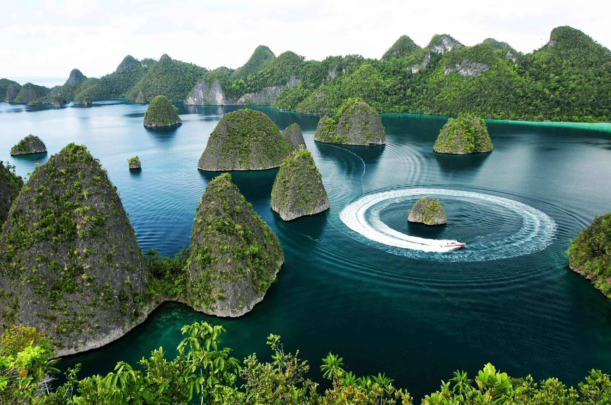
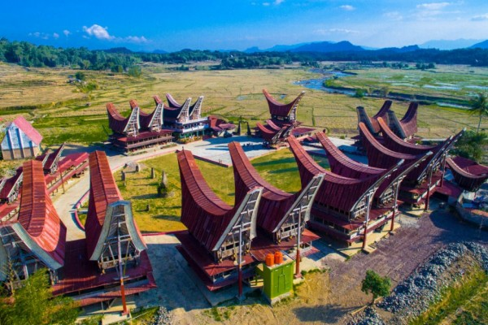

Candi Borobudur
Salah satu candi Buddha terbesar di dunia, terletak di Magelang, Jawa Tengah.
Detail
Pulau Komodo
Rumah bagi komodo, spesies kadal terbesar di dunia, di Provinsi Nusa Tenggara Timur.
Detail

Raja Ampat
Destinasi penyelaman terbaik di dunia dengan keindahan bawah laut yang luar biasa.
Detail
